Screenshot reali del simulatore iOS 26.5, 10 ottobre 2026. Dati in memoria e guasti controllati disponibili solo in Debug. Build riuscita. Recupero verificato per esportazione e Home.
Contrasto corretto tra testo e sfondo del pulsante.
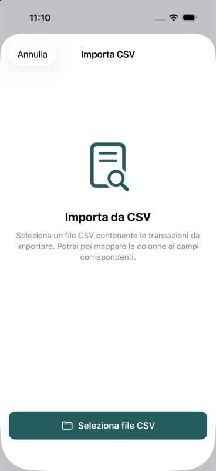
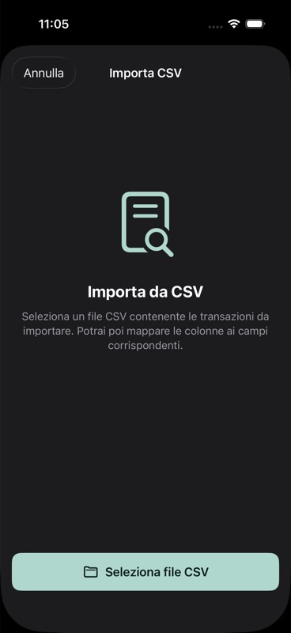
Il pulsante Continua usa la stessa coppia di colori accessibile.
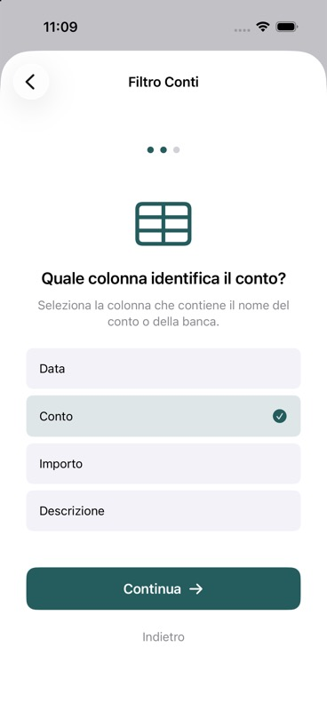
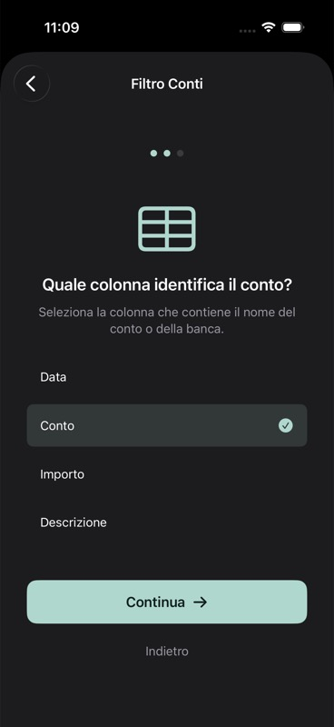
Anche il pulsante di importazione mantiene il contrasto.
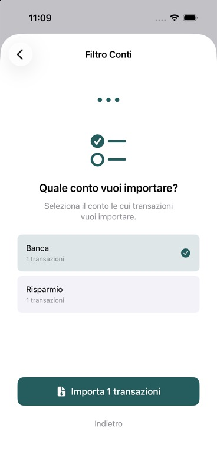
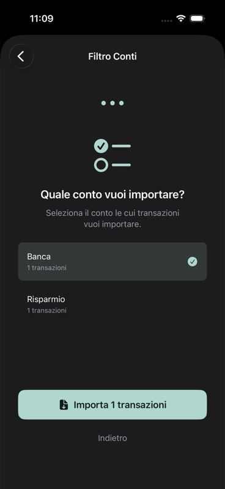
Errore controllato visibile. Riprova recupera il conteggio: 46 movimenti di prova.
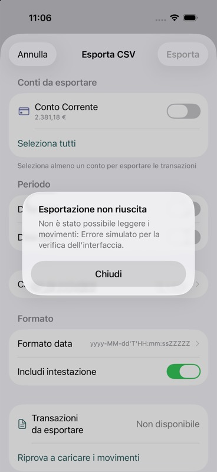
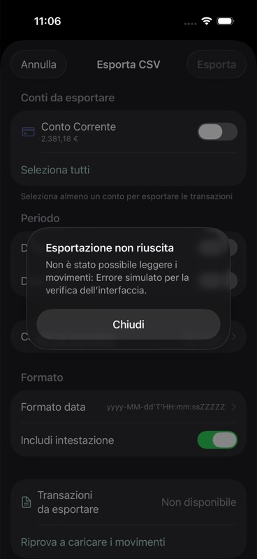
Errore di salvataggio controllato: l’onboarding resta utilizzabile.
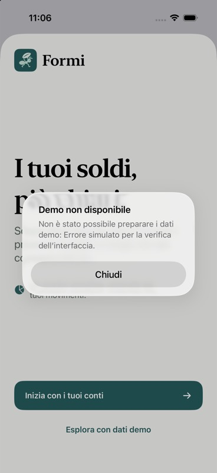
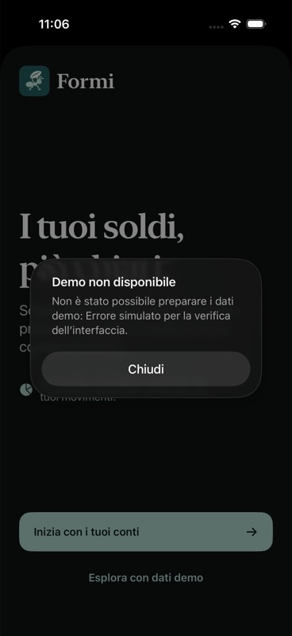
Il riepilogo precedente resta visibile. Riprova carica di nuovo i dati e rimuove l’avviso.
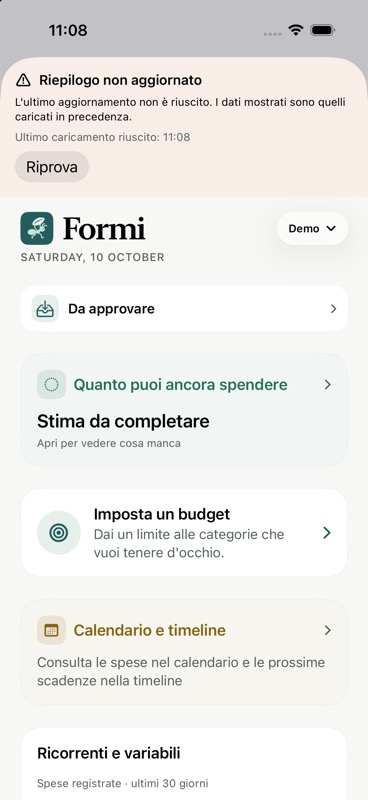
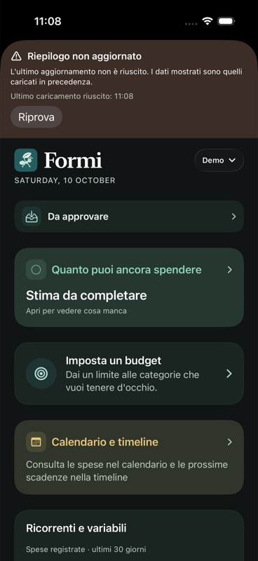
La sovrascrittura tramite NSSavePanel su Mac non è verificabile nel simulatore iOS; resta coperta dai test del writer già eseguiti. Il controllo visuale riguarda le correzioni 1–4.